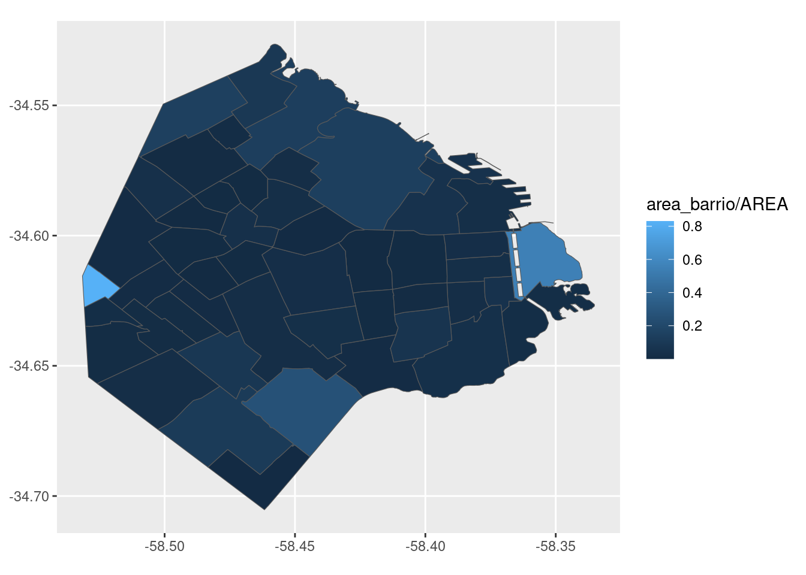
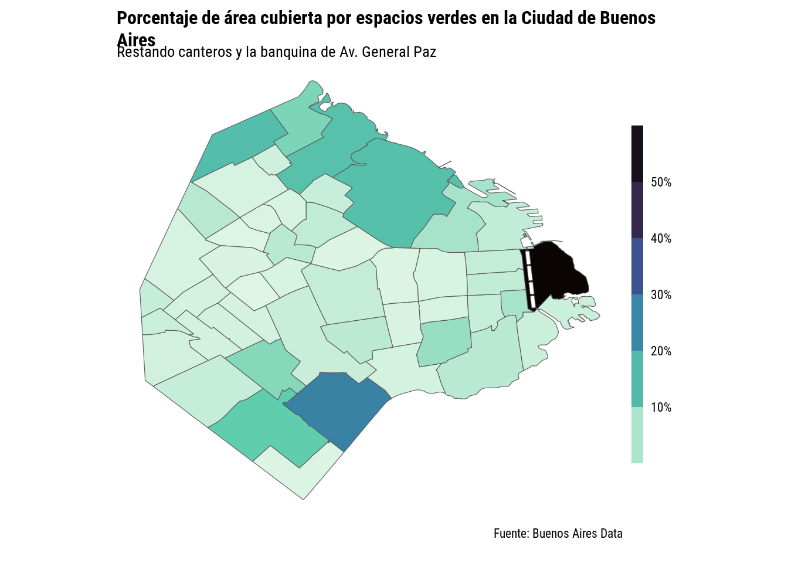

Hoy voy a trabajar con datos de espacios verdes según el Gobierto de la Ciudad de Buenos Aires. Y digo “según” porque esta gente tiene una definición de “espacio verde” que a veces te desconcierta.
verdes <- read_sf("datos/espacio_verde_publico/espacio_verde_publico_wgs84.shp")
verdes %>%
ggplot() +
geom_sf(aes(color = clasificac))No se en que país un cantero es un espacio verde. No es que puedar ir a la 9 de Julio a poner la mantita y hacer un picnic. Chau canteros.
verdes <- read_sf("datos/espacio_verde_publico/espacio_verde_publico_wgs84.shp") %>%
filter(clasificac != "CANTERO CENTRAL") # No gente, un cantero no es un espacio verdeAcá es curioso que ese barrio al oeste tenga más o menos un 80% del área cubierta por espacios verdes. Es Villa Real y si van a google maps van a ver que la cosa no se sostiene, tiene 3 plazas locas. Tampoco tiene sentido que el porcentaje de este barrio sea mayor al de Puerto Madero que tiene la Reserva Costanera Sur ahi mismo.
mapa_barrios <- sf::st_read("https://cdn.buenosaires.gob.ar/datosabiertos/datasets/ministerio-de-educacion/barrios/barrios.geojson")## Reading layer `barrios' from data source
## `https://cdn.buenosaires.gob.ar/datosabiertos/datasets/ministerio-de-educacion/barrios/barrios.geojson'
## using driver `GeoJSON'
## Simple feature collection with 48 features and 5 fields
## Geometry type: MULTIPOLYGON
## Dimension: XY
## Bounding box: xmin: -58.53152 ymin: -34.70529 xmax: -58.33515 ymax: -34.52649
## Geodetic CRS: WGS 84verdes %>%
as.data.frame() %>%
group_by(BARRIO) %>%
summarise(area_barrio = sum(area)) %>%
left_join(mapa_barrios) %>%
ggplot(aes(geometry = geometry)) +
geom_sf(aes(fill = area_barrio/AREA)) 
Ahh pero si podemos contar los canteros de la 9 de Julio como espacios verdes, también podemos contar la banquina de la General Paz y asignar TODO a un único barrio. En defensa del Gobierto de la Ciudad de Buenos Aires, es cierto que es algunas partes del recorrido hay árboles y eso ayuda. Pero son los menos.
verdes %>%
filter(BARRIO == "VILLA REAL") %>%
ggplot() +
geom_sf(aes(color = clasificac))verdes <- read_sf("datos/espacio_verde_publico/espacio_verde_publico_wgs84.shp") %>%
filter(clasificac != "CANTERO CENTRAL") %>% # No gente, un cantero no es un espacio verde
filter(!(BARRIO == "VILLA REAL" & clasificac == "PLAZOLETA")) # No, la General Paz tampoco
verdes %>%
as.data.frame() %>%
group_by(BARRIO) %>%
summarise(area_barrio = sum(area)) %>%
left_join(mapa_barrios) %>%
ggplot(aes(geometry = geometry)) +
geom_sf(aes(fill = area_barrio/AREA)) +
scale_fill_viridis_c(option = "G", direction = -1,
labels = scales::percent_format(),
guide = guide_colorsteps(barwidth = 0.5,
barheight = 15)) +
labs(x = NULL, y = NULL, fill = NULL,
title = "Porcentaje de área cubierta por espacios verdes en la Ciudad de Buenos Aires",
subtitle = "Restando canteros y la banquina de Av. General Paz",
caption = "Fuente: Buenos Aires Data") +
theme_void(base_size = 10,
base_family = "Roboto Condensed") +
theme(plot.title.position = "plot",
plot.title = ggtext::element_textbox_simple(face = "bold"),
plot.margin = unit(c(0.5, 0.5, 0.5, 0.5), "cm"))
# ggsave("day13.png", device = png, type = "cairo", bg = "white", width = 12, height = 12, units = "cm", dpi = 150)